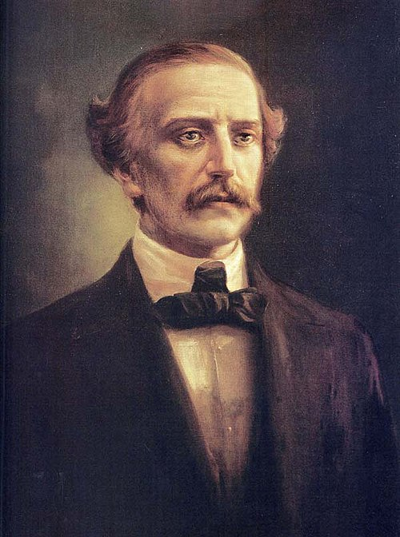
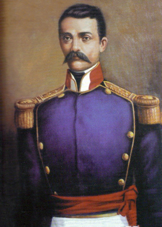
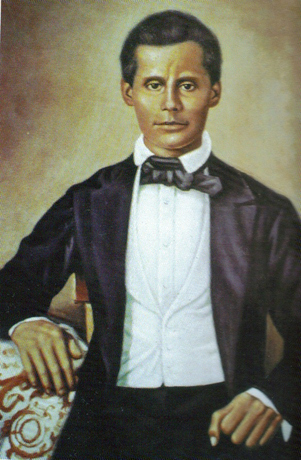

26 de enero de 1813 – 15 de julio de 1876
Juan Pablo Duarte y Díez, nombrado en escritos como Juan P. Duarte o J. P. Duarte y conocido en la Trinitaria por el seudónimo Arístides, fue un libertador, político, empresario y poeta dominicano que tuvo una activa participación en la primera fase de la independencia dominicana al frente de la facción de los duartistas —o filorios—, además fue el artífice del primer golpe de Estado de la República Dominicana que lo convirtió en el primer inspector general (comandante en jefe) del Ejército Libertador de la República Dominicana y también fue el primero en inaugurar la práctica decimonónica de la presidencia paralela en el territorio. Es junto a Francisco del Rosario Sánchez y Matías Ramón Mella, uno de los Padres de la Patria de la República Dominicana. Ideó y presidió la lucha de varias organizaciones civiles-político-militares clandestinas como La Dramática, La Filantrópica y La Trinitaria, creadas para luchar contra el régimen haitiano y por la independencia de Santo Domingo.

25 de febrero de 1816 – 4 de junio de 1864
Matías Ramón Mella Castillo fue un militar y político dominicano. Es uno de los Padres de la Patria de la República Dominicana junto a Juan Pablo Duarte y Francisco del Rosario Sánchez. Sus nombres son frecuentemente intercambiados y suele ser llamado Matías Ramón Mella aunque no existe ninguna información que lo sustente, por el contrario, todos sus documentos oficiales certifican que su nombre fue Ramón Matías Mella, siendo «Ramón» su primer nombre y «Matías» el segundo, por lo que se desconoce el origen de este cambio.

9 de marzo de 1817 – 4 de julio de 1861
Francisco del Rosario Sánchez fue un abogado, militar y político dominicano. Es considerado, junto a Juan Pablo Duarte Díez y Ramón Matías Mella Castillo, como uno de los Padres de la Patria de la República Dominicana. Tras el exilio de Duarte, Sánchez asumió el liderazgo del movimiento independentista, manteniendo correspondencia con él a través de sus familiares. Bajo su dirección, los dominicanos proclamaron la independencia el 27 de febrero de 1844, separándose de Haití. Aunque dirigió la Proclamación en ausencia de Duarte, no asumió la presidencia interina del país, que recayó en Tomás Bobadilla como líder de la Junta Central Gubernativa. Sin embargo, sus ideas de un estado plenamente independiente encontraron una fuerte oposición dentro del nuevo gobierno, especialmente por parte del sector conservador liderado por Pedro Santana.